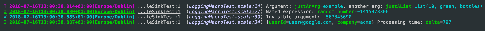

LogStage
LogStage is a zero-cost structural logging framework for Scala & Scala.js
Key features:
- LogStage extracts structure from ordinary string interpolations in your log messages with zero changes to code.
- LogStage uses macros to extract log structure, its faster at runtime than a typical reflective structural logging frameworks,
- Log contexts
- Console, File and SLF4J sinks included, File sink supports log rotation,
- Human-readable output and JSON output included,
- Method-level logging granularity. Can configure methods
com.example.Service.startandcom.example.Service.doSomethingindependently, - Slf4J adapters: route legacy Slf4J logs into LogStage router
Overview
The following snippet:
import logstage._
import scala.util.Random
val logger = IzLogger()
val justAnArg = "example"
val justAList = List[Any](10, "green", "bottles")
logger.trace(s"Argument: $justAnArg, another arg: $justAList")
// custom name, not based on `val` name
logger.info(s"Named expression: ${Random.nextInt() -> "random number"}")
// print result without a name
logger.warn(s"Invisible argument: ${Random.nextInt() -> "random number" -> null}")
// add following fields to all messages printed by a new logger value
val ctxLogger = logger("userId" -> "user@google.com", "company" -> "acme")
val delta = Random.nextInt(1000)
ctxLogger.info(s"Processing time: $delta")
Will look like this in string form:

And like this in JSON:

Note:
- JSON formatter is type aware!
- Each JSON message contains
@classfield with holds a uniqueevent classidentifier. All events produced by the same source code line will share the sameevent class.
Syntax Reference
1) Simple variable:
scala
logger.info(s"My message: $argument")
2) Chain:
scala
logger.info(s"My message: ${call.method} ${access.value}")
3) Named expression:
scala
logger.info(s"My message: ${Some.expression -> "argname"}")
4) Invisible name expression:
scala
logger.info(s"My message: ${Some.expression -> "argname" -> null}")
5) De-camelcased name:
scala
logger.info(${camelCaseName-> ' '})
Dependencies
// LogStage API, you need it to use the logger
libraryDependencies += Izumi.R.logstage_core
// Optional
libraryDependencies ++= Seq(
// Json output
Izumi.R.logstage_rendering_circe,
// Router from Slf4j to LogStage
Izumi.R.logstage_adapter-slf4j,
// Configure LogStage with Typesafe Config
Izumi.R.logstage_config,
// LogStage integration with DIStage
Izumi.R.logstage_di,
// Router from LogStage to Slf4J
Izumi.R.logstage_sink_slf4j,
)
or
val izumi_version = "0.9.1-SNAPSHOT"
// LogStage API, you need it to use the logger
libraryDependencies += "io.7mind.izumi" %% "logstage-core" % izumi_version
// optional
libraryDependencies ++= Seq(
// Json output
"io.7mind.izumi" %% "logstage-rendering-circe" % izumi_version,
// Router from Slf4j to LogStage
"io.7mind.izumi" %% "logstage-adapter-slf4j" % izumi_version,
// Configure LogStage with Typesafe Config
"io.7mind.izumi" %% "logstage-config" % izumi_version,
// LogStage integration with DIStage
"io.7mind.izumi" %% "logstage-di" % izumi_version,
// Router from LogStage to Slf4J
"io.7mind.izumi" %% "logstage-sink-slf4j " % izumi_version,
)
If you’re not using sbt-izumi-deps plugin.
Basic setup
import logstage._
import logstage.circe._
val jsonSink = ConsoleSink.json(prettyPrint = true)
val textSink = ConsoleSink.text(colored = true)
val sinks = List(jsonSink, textSink)
val logger: IzLogger = IzLogger(Trace, sinks)
val contextLogger: IzLogger = logger(Map("key" -> "value"))
logger.info("Hey")
contextLogger.info(s"Hey")
Log algebras
LogIO and LogBIO algebras provide a purely-functional API for one- and two-parameter effect types respectively:
import logstage._
import cats.effect.IO
val logger = IzLogger()
// logger: IzLogger = izumi.logstage.api.IzLogger@519c9b78
val log = LogIO.fromLogger[IO](logger)
// log: LogIO[IO] = logstage.LogIO$$anon$1@5c0bfe27
log.info(s"Hey! I'm logging with ${log}stage!").unsafeRunSync()
I 2019-03-29T23:21:48.693Z[Europe/Dublin] r.S.App7.res8 ...main-12:5384 (00_logstage.md:92) Hey! I'm logging with log=logstage.LogIO$$anon$1@72736f25stage!
LogstageZIO.withFiberId provides a LogBIO instance that logs the current ZIO FiberId in addition to the thread id:
Example:
import logstage.LogstageZIO
import zio.{IO, DefaultRuntime}
val log: LogBIO[IO] = LogstageZIO.withFiberId(logger)
// log: LogBIO[IO] = logstage.LogstageZIO$$anon$1@4f9e72c6
val rts = new DefaultRuntime {}
// rts: AnyRef with DefaultRuntime = repl.Session$App9$$anon$1@361f896e
rts.unsafeRun {
log.info(s"Hey! I'm logging with ${log}stage!")
}
I 2019-03-29T23:21:48.760Z[Europe/Dublin] r.S.App9.res10 ...main-12:5384 (00_logstage.md:123) {fiberId=0} Hey! I'm logging with log=logstage.LogstageZIO$$anon$1@c39104astage!
LogIO/LogBIO algebras can be extended with custom context, same as IzLogger:
import cats.effect.IO
import cats.implicits._
import logstage._
import io.circe.Printer
import io.circe.syntax._
def importEntity(entity: Entity)(implicit log: LogIO[IO]): IO[Unit] = {
val ctxLog = log("ID" -> someEntity.id, "entityAsJSON" -> entity.asJson.pretty(Printer.spaces2))
load(entity).handleErrorWith {
case error =>
ctxLog.error(s"Failed to import entity: $error.").void
// JSON message includes `ID` and `entityAsJSON` fields
}
}
SLF4J Router
When not configured, logstage-adapter-slf4j will log messages with level >= Info to stdout.
Due to the global mutable nature of slf4j to configure slf4j logging you’ll have to mutate a global singleton. To change its settings, replace its LogRouter with the same one you use elsewhere in your application.
import logstage._
import izumi.logstage.api.routing.StaticLogRouter
val myLogger = IzLogger()
// myLogger: IzLogger = izumi.logstage.api.IzLogger@3c4d50f0
// configure SLF4j to use the same router that `myLogger` uses
StaticLogRouter.instance.setup(myLogger.router)